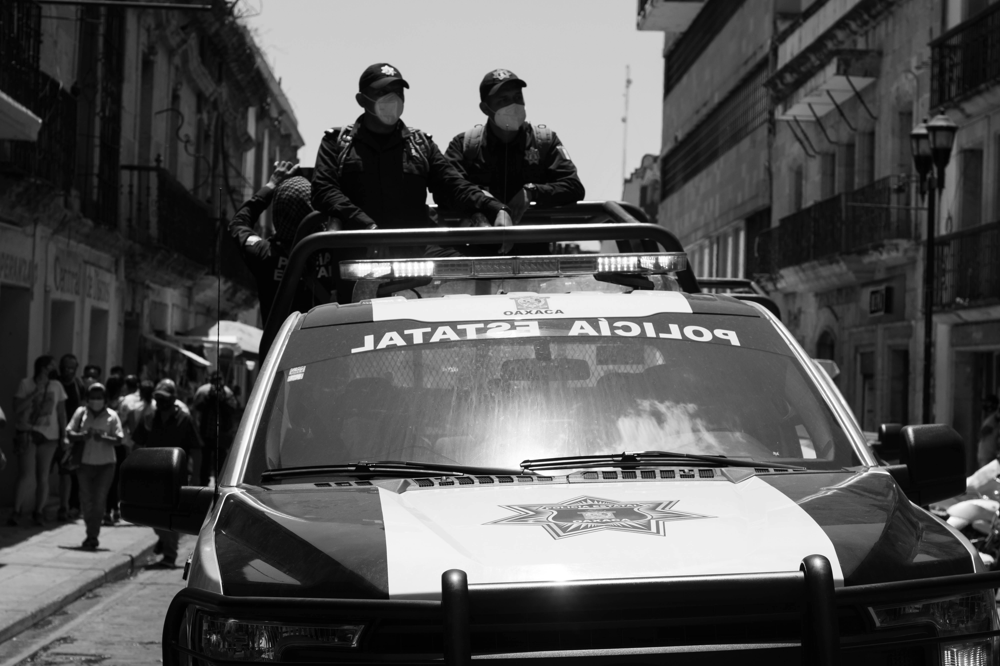

La Policia Estatal de Queretaro es una institución encargada de mantener el orden público,
garantizar la seguridad ciudadana y prevenir delitos en el estado. Su labor incluye patrullajes,
operativos de vigilancia y coordinación con otras corporaciones de seguridad.

Funciones principales
Entre sus funciones destacan la prevención del delito, el patrullaje en zonas urbanas y rurales,
el apoyo en situaciones de emergencia y la colaboración con autoridades municipales y federales.
Salario de un policía estatal
El salario de un policía estatal depende de su rango, experiencia y antigüedad. Además, cuentan con
prestaciones como seguridad social, capacitación constante y oportunidades de ascenso.
Tecnología utilizada
La corporación utiliza tecnologías como sistemas de videovigilancia, radiocomunicación, bases de datos
y herramientas digitales para mejorar la seguridad y la eficiencia en sus operaciones.
Campo laboral
Los policías estatales pueden desempeñarse en áreas de patrullaje, investigación, seguridad vial,
protección de instalaciones estratégicas y apoyo en operativos especiales.